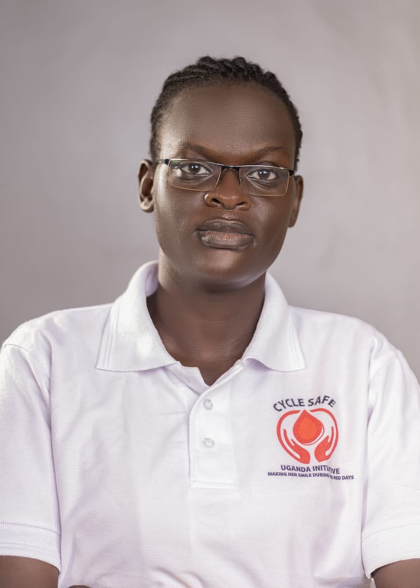

Meet the dedicated team driving change in menstrual health
Founder / Team Lead
Social scientist, entrepreneur, and philanthropist providing overall leadership, strategic direction, and partnership development.

Admin & Finance Manager
Nurse overseeing financial management and administrative operations.
Monitoring & Evaluation Manager
Oversees data collection, program monitoring, and impact evaluation. Early Childhood Education Administrator & Social Worker.
Programs Manager
Leads the planning and implementation of organizational programs.
Masindi Municipality, Masindi District, Uganda